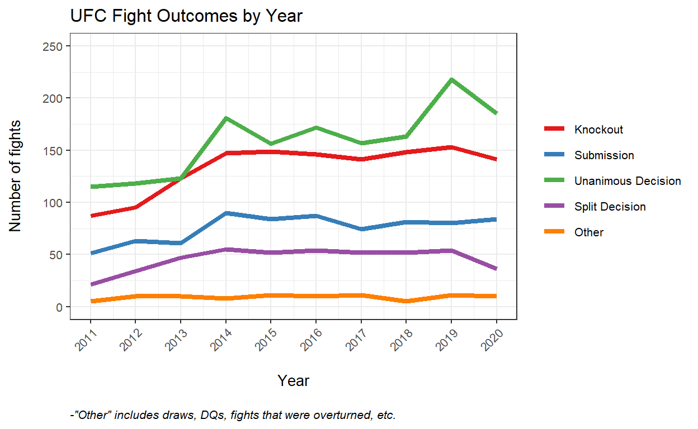
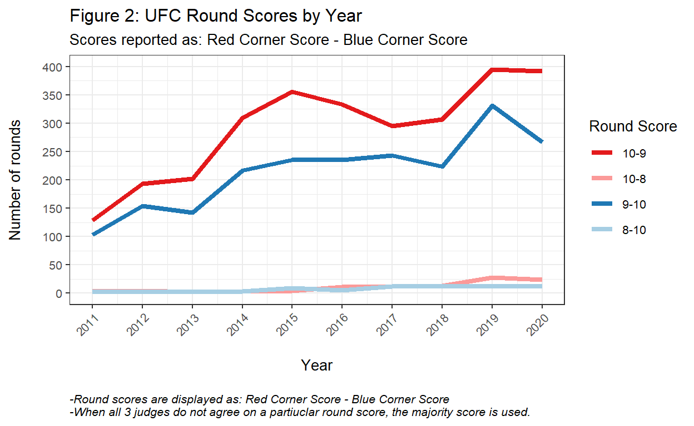
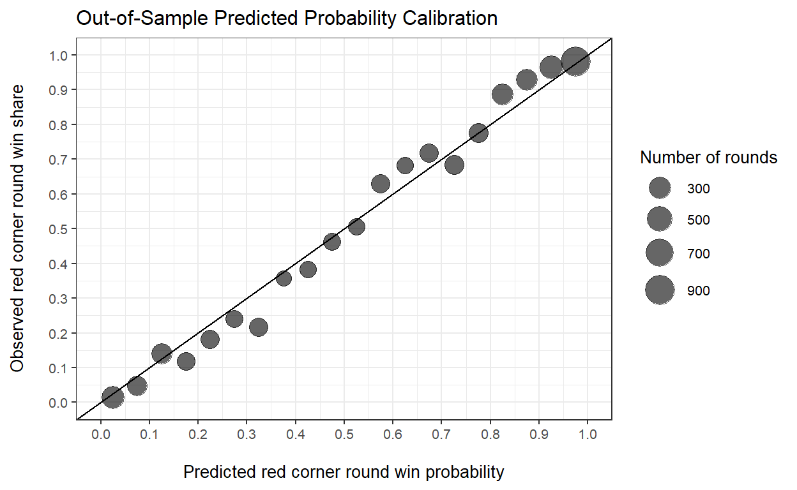
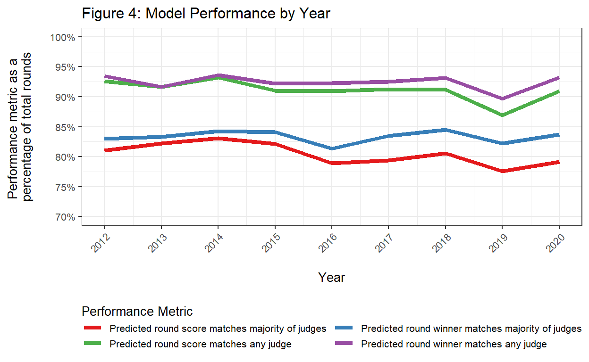

A machine learning algorithm that predicts judges’ scores by round in the UFC
Fights in the Ultimate Fighting Championship (UFC) consist of 3 or 5 rounds, each of which lasts 5 minutes in duration. At any point in any round, the fight may end via knockout or submission. Otherwise, the winner of the fight is determined by the judges at the end of the final round. Each round is scored independently by 3 judges based on effective striking, effective grappling, octagon control, aggressiveness, and effective defense - in that order. Each judge awards 10 points to the winner of each round and 9 or fewer points to the loser (with some incredibly rare exceptions). Then, after the final round, each judge’s scores are added across rounds to arrive at the final scorecard. The fighter with more points for the majority of final scores is the winner of the fight.
Judging decisions can be controversial. It’s often unclear how a particular judge came up with a certain seemingly unlikely score. Enter JudgeAI, a machine learning model that predicts round scores. If successful, JudgeAI will be able to identify trends in the relationship between striking/grappling statistics and round scores given by the judges in order to quantify how likely or unlikely each possible score is for a round with a given set of statistics. While the publicly available statistics are far from a perfect measure of what the judges can see with their eyes throughout each round, it is my hope that these statistics are enough to proxy for the criteria judges use to score rounds such that JudgeAI need not watch the fight in order to accurately predict round scores.
The purpose of this post is twofold:
One final note before we get started: this post is primarily methodological in nature, which is admittedly off-putting to some. This post serves to illustrate what I did, how I did it, and how good or bad JudgeAI performs. I plan to use this post and the methodology described herein as a foundation for a number of derivative results and metrics that are hopefully much more accessible to those who enjoy the UFC but are not interested in these methodological details. It is my hope that this post will be a comprehensive reference for anyone interested in the details of JudgeAI.
According to official UFC statistics, there were 4,221 fights in the UFC between 2011-2020, 48.4% of which resulted in a winner being declared by the judges’ scorecard. The figure below shows how UFC fights ended over this period. This post will focus on split and unanimous decisions only. A split decision occurs when the 3 judges do not all agree on which fighter won the fight, while a unanimous decision occurs when all 3 judges have the same winner on the final scorecard. Fortunately, the figure below shows that the number of split decisions is not noticeably rising over the past few years. Instead, if anything, judges are agreeing with each other at higher rates at the end of the decade, as measured by the proportion of decisions that are unanimous.

Using data from http://www.mmadecisions.com/, we explore how judges score fights by round. However, we first have to combine the judging data with the UFC official statistics data. As a result, we lose some fights. First, we drop all fights that do not end in a decision by the judges since scorecards are not publicly reported for any of the rounds in these fights. Then, we drop rounds where judging data was otherwise not available or where judges gave scores other than 10-8, 10-9, 9-10, or 8-10 since these potentially indicate a penalty where a point was deducted from one of the fighters (or other rare edge cases). By the end, of the 2,045 UFC fights between 2011-2020 where a winner was declared by the judges, 1,670 fights (containing 5,238 rounds) are successfully merged with the judging decisions data and retained for analysis. Unless otherwise stated, all subsequent counts and statistics refer to this set of fights, which comprises 81.7% of fights in which the judges selected a winner and 39.6% of all UFC fights between 2011-2020.
In order to predict round scores, we need to determine the “ground truth” score for each round. This is an inherently impossible task because if we had the ground truth then we would not need judges. Hence, we consider the “true” score of the round to be the score given by the majority of judges. Of the 5,238 rounds under consideration, all 3 judges provided the same score for 76.9%, or 4,029 rounds.
In the UFC, fighters are assigned to either the red corner or the blue corner. For title fights, the defending champion is always the red corner and the challenger is always the blue corner. For all other fights, the corner assignments are not quite clear (at least not to me), but the red corner generally appears to be the more well-known and/or more experienced fighter. The figure below shows how rounds were scored between 2011-2020, where the reported scores follow the convention: Red Corner Score - Blue Corner Score.
We see in the figure that red corners win more often than blue corners in each year. Over the entire period, the red corner won 57.6% of all rounds considered. Also, we notice that 10-8 and 8-10 rounds are incredibly rare, comprising only 3.3% of all rounds considered.

Recall that our goal is to develop a machine learning model that predicts judges’ scores using the statistics accumulated in each round. However, before we do that, we first consider a simple, baseline decision rule that predicts round winners to which we can compare our eventual model’s performance. That is, the baseline decision rule predicts that whichever fighter landed more significant strikes in a round is the winner. Among rounds in which each fighter landed the same number of significant strikes, the fighter who landed more total strikes is predicted to be the winner. Finally, among the rounds remaining where each fighter landed the same number of significant and total strikes (only 0.9% of all rounds considered), the red corner is predicted to be the winner.
Table 1 below shows how well our baseline decision rule is able to predict round winners across time. We see that the baseline rule performs relatively well in each year, which makes sense since the baseline only considers striking and since effective striking is the metric given the highest priority in the judges’ decision making. Of all rounds considered, the baseline rule correctly predicts the winner 77.8% of the time.
| Year | Number of Rounds | Baseline Round Winner Accuracy |
|---|---|---|
| 2011 | 237 | 79.3% |
| 2012 | 353 | 80.5% |
| 2013 | 348 | 74.7% |
| 2014 | 533 | 76.9% |
| 2015 | 604 | 78.5% |
| 2016 | 584 | 75.0% |
| 2017 | 562 | 78.5% |
| 2018 | 556 | 79.1% |
| 2019 | 766 | 77.3% |
| 2020 | 695 | 78.8% |
| Note: | ||
|
-Baseline decision rule predicts the winner as the fighter who landed more significant strikes. Ties go to whoever landed more total strikes, or the red corner if total strikes are also even. -“Round Winner Accuracy” is defined as the share of rounds in which the predicted round winner matches the winner declared by the majority of judges. |
Now that we have established a baseline decision rule, we proceed with building the predictive model, JudgeAI. The baseline decision rule only considers strikes landed, while the actual model will consider many more features for each round. If the eventual predictive model is any good, it will predict round winners more successfully than this simple decision rule.
The outcome of interest for JudgeAI is the score given by the majority of judges for each round. That is, the outcome will be one of 10-9, 10-8, 9-10, or 8-10, and again, the scores follow the convention: Red Corner Score - Blue Corner Score. JudgeAI will use the statistics accumulated by each fighter during each round to predict the outcome. The official UFC statistics provide striking and grappling statistics, to include total strikes landed and attempted, significant strikes landed and attempted, knockdowns, takedowns landed and attempted, submission attempts, reversals, and control time. In addition, significant strikes are broken down into strikes to the head, body, or legs; and strikes at distance, in the clinch, or on the ground. Using strikes and takedowns landed and attempted, we also compute striking and takedown accuracy, respectively. Finally, rather than including each fighter’s round-level statistics separately in the model, we instead include the difference by taking the red corner’s statistic minus that of the blue corner, for each statistic included. In total, there are 31 total features in the model, all of which are statistical differences.
Put more simply, each observation in the model is a single round where the outcome is the score given by the majority of judges, and the features used to predict each majority score are the differences between each fighter’s accumulated statistics. For example, one feature in the model is the difference in total strikes landed for each round, which is computed by subtracting the number of total strikes landed by the blue corner from the number of total strikes landed by the red corner.
Since we are predicting scores over time and since judging and fighter tendencies can change over time, we employ time series cross validation to train and evaluate our predictions. That is, for each month in the period, beginning with January 2012, we train the model using data from all prior months in the period and then make predictions on the single month under consideration. Table 2 below illustrates the time series cross validation strategy where a series of models is trained, each of which predicts scores for a single month of fights (“Evaluation Month” from the table) using all prior data in the period (“Training Months” from the table).
| Training Months | Evaluation Month |
|---|---|
| January 2011 - December 2011 | January 2012 |
| January 2011 - January 2012 | February 2012 |
| January 2011 - February 2012 | March 2012 |
| … | … |
| January 2011 - November 2020 | December 2020 |
| Note: | |
| -Data in the Training Months are used to build each model. Predictions are then made on data in the “Evaluation Month”. |
This modeling strategy contains 3 primary advantages over a more simple approach of splitting the data into a training and test set - these advantages are:
All predictions are made on fights unseen by the model through which predictions are made (i.e. we use out-of-sample predictions only).
We recover predictions for the entire period, except for fights in 2011. Since 2011 is the first year we have data, we only use it for training.
We are not “cheating” by using a model trained on fights that come after the fights on which we are predicting. This more accurately simulates how successful JudgeAI would have performed had it been implemented in the past, and it gives us a better sense of how well JudgeAI will perform going forward.
These 3 advantages are significant and essential to the validity of the model evaluation section. Without (1), we would be making predictions on rounds that the model has already seen, which would incorrectly inflate the performance. Further, without (3), the model would not accurately convey historical performance. For example, if the model is trying to predict round scores for fights in 2014 but is trained using rounds from 2018, the resulting performance would not be realistic because the model is using fights that have not happened yet to make predictions. Finally, advantage (2) is also important because it provides us with a large sample by which to evaluate model performance, which provides us with a more robust estimate of future performance.
The algorithm I’ve chosen to use is random forests since it quickly and efficiently builds an ensemble of decision trees to make predictions without overfitting. Also, decision trees are able to capture complex interactions between features, which means we do not have to specify which combinations of features should be considered in conjunction with one another; instead, the algorithm will detect these relationship automatically by design. Each algorithm in the time series cross validation is trained using 500 decision trees to grow a probability forest. Hence, for each round, the algorithm provides a predicted probability of each possible score out of the scores 10-9, 10-8, 9-10, and 8-10.
After performing time series cross validation, we now have a predicted probability of each possible score for each round in our sample. After aggregating these round score probabilities up to round win probabilities, the figure below shows how well these round win probabilities are calibrated. If JudgeAI yields well-calibrated probabilities, then we should observe, for example, the red corner winning approximately 60% of rounds in which JudgeAI gives the red corner around a 60% probability of winning. In other words, the figure below checks whether the round win probabilities mean what we want them to mean. Each point represents a group of rounds with both (a) red corner win probabilities centered around the corresponding point on the horizontal axis, and (b) an observed red corner win share equal to the corresponding point along the vertical axis. Points that hug the displayed 45 degree line are considered well calibrated. Since this is real-world data, perfect calibration is not expected, and overall, this figure is quite promising. In aggregate, JudgeAI’s predicted round win probabilities do more or less reflect the share of rounds won historically.

Using the predicted probabilities for each possible score, we define the predicted score as the score with the highest predicted probability from the model. We then compute the scoring accuracy of the model by determining the number of rounds in which the predicted score matches the score given by the majority of the judges and then dividing by the total number of rounds. That is,
\(\text{Scoring Accuracy} = \frac{\text{# of rounds where JudgeAI's predicted score = the score given by majority of judges}}{\text{Total number of rounds}}\).
Over all fights considered between 2012-2020, the model’s scoring accuracy is 80.2%, which means that the model agrees with the majority of judges on the particular score in approximately 4 out of every 5 rounds.
Diving deeper into performance metrics, the model predicts the same round winner as the majority of judges in 83.3% of rounds. An example of the difference between this measure and the scoring accuracy reported before would be a round where the model’s predicted score is 10-9, but the majority of judges score it 10-8. Both the model and the judges have the same round winner, but they disagree on the particular score of the round.
While JudgeAI performs well based on how frequently it agrees with the majority of judges, it is also beneficial to see how often it agrees with any judge. If all 3 judges agree on a particular round score or round winner, it is much more likely that this score or winner is objectively correct. Hence, JudgeAI should very rarely give a predicted score or predicted round winner that disagrees with every judge. Fortunately, such occurrences are rare. The model’s predicted scores match at least 1 judge’s score in 90.8% of rounds. Likewise, the model’s predicted round winner matches that of at least 1 judge in 92.3% of rounds.
Further, the figure below displays the model’s performance by year and shows that performance is both strong and consistent across time. To the extent that judging biases or preferences change over time, the model adapts without any egregious degradation. Similarly, as the sport of mixed martial arts (MMA) evolves over time, the judges have to adapt their internal interpretations of the scoring criteria in order to consistently and fairly score fights. Based on the consistency of the model’s performance over time, the evolution of the sport across the period does not appear to adversely impact the generalizability of the model.

Table 3 below compares the model’s performance to the aforementioned baseline decision rule with respect to round winner accuracy. In each year considered, the model is more accurate at determining round winners, which is expected since it accounts for more than just strikes landed. Moreover, the model is significantly more valuable than the baseline because it makes predictions for each possible round score, instead of only the round winner, and it assigns a probability to each possible outcome, instead of just a binary prediction. Ultimately, the baseline decision rule is not a tough bar to clear, but it is nonetheless encouraging that our model is a drastic improvement over a hypothetical judge that only considers strikes landed and ignores all other aspects of the fight.
| Year | Number of Rounds | Baseline Round Winner Accuracy | JudgeAI Round Winner Accuracy |
|---|---|---|---|
| 2012 | 353 | 80.5% | 83.0% |
| 2013 | 348 | 74.7% | 83.3% |
| 2014 | 533 | 76.9% | 84.2% |
| 2015 | 604 | 78.5% | 84.1% |
| 2016 | 584 | 75.0% | 81.3% |
| 2017 | 562 | 78.5% | 83.5% |
| 2018 | 556 | 79.1% | 84.5% |
| 2019 | 766 | 77.3% | 82.2% |
| 2020 | 695 | 78.8% | 83.7% |
| Note: | |||
| -“Round Winner Accuracy” is defined as the share of rounds in which the predicted round winner matches the winner declared by the majority of judges. |
Finally, to unpack the model a bit more and see which statistics it relies upon the most to score rounds, we use feature importance. Table 4 below displays the top 10 most important features in the model, where importance is essentially defined as how helpful the feature is in predicting the outcome. Again, when scoring a round, judges are supposed to consider effective striking, effective grappling, octagon control, aggressiveness, and effective defense - in that order. Examining the table below shows that JudgeAI appears to be capturing the exact same criteria in nearly the exact same order. This promising result suggests that judges generally follow the criteria with which they are provided, as expected, and JudgeAI is able to use the round-level statistics to effectively capture this criteria when predicting round scores.
| Rank | Feature | Corresponding Judging Criteria |
|---|---|---|
| 1 | Difference in total strikes landed | Effective striking |
| 2 | Difference in significant strikes landed | Effective striking |
| 3 | Difference in significant strikes landed to the head | Effective striking |
| 4 | Difference in control time | Octagon control, effective grappling |
| 5 | Difference in total strikes attempted | Aggressiveness |
| 6 | Difference in significant strikes attempted | Aggressiveness |
| 7 | Difference in significant strike accuracy | Effective striking |
| 8 | Difference in significant strike accuracy to the head | Effective striking |
| 9 | Difference in significant strikes attempted on the ground | Effective grappling |
| 10 | Difference in total strike accuracy | Effective striking |
| Note: | ||
|
-Feature importance is computed on a model including all rounds in the period, as opposed to using one of the models created via time series cross validation. -Differences are computed by subtracting blue corner statistics from the corresponding red corner statistics. |
I’d like to clearly state that JudgeAI is not perfect. I am not claiming that it is better than any particular judge, nor am I suggesting that it should replace judges in the UFC.
While the consistently strong performance of JudgeAI over time is promising, this algorithm does have serious limitations. First and foremost, statistics do not perfectly convey damage dealt. Effective striking is the primary judging criteria, and even though accumulating many more significant strikes than one’s opponent does correlate with dealing more damage, just looking at statistical differences will not replace what we can see from watching a fight. This issue is especially problematic in rounds that are close statistically but not as close when you watch it because one fighter clearly landed harder blows.
Further, JudgeAI seeks to uncover longer-term trends in the relationship between round scores and the features included in the model. Therefore, JudgeAI uses these broader relationships to score every round no matter what, but in reality, many rounds include some sort of rare occurrence, like a devastating calf kick that leaves a fighter largely immobile, that can and perhaps should sway the judges but will not be considered by the model. Similarly, the model only sees the aggregate statistics for the round, so if a particular fighter starts slow in the first half but dominates the second half of a round, the judges might give this round to the strong finisher while the model might not.
Finally, the vast majority of rounds are scored 10-9. As a result, JudgeAI struggles to predict 10-8 rounds with a high probability, even when the striking statistics are wildly lopsided. There are methodological adjustments that could be made to increase the model’s precision in this area, but I have not yet explored such changes.
The most obvious extension of JudgeAI would be aggregating the round-level predictions to produce a distribution of potential final scores. Since JudgeAI produces round score probabilities instead of just round win probabilities, it is possible to use the model’s predictions to generate a complete probability distribution of every possible final score.
Overall, I think JudgeAI shows very promising results in aggregate but can still provide interesting interesting context for each round. While it cannot be used to definitively say that a particular judge gave the wrong score for a particular round, it can be used to assess judges over a larger sample of fights. Since the model is calibrated to reflect the majority decision of judges and since it is largely successful in doing so, any judges whose scores regularly deviate from the model over a large sample of fights
Finally and most importantly, I believe JudgeAI can be leveraged to create brand new advanced metrics for MMA. Baseball has expected runs that uses statistics from within an inning to essentially compute the number of runs a team would expect to score on average after generating those statistics. Likewise, soccer has expected goals that uses the probability of scoring from each shot a team takes over the course of a game to essentially calculate the total number of goals a team would expect to score after taking shots from those locations. I believe JudgeAI’s predicted round win probabilities can be used to create expected rounds, a metric that measures the number of rounds fighters would expect to win after compiling their observed round-level statistics. If successful, this new metric can move the sport away from looking at win percentages or finish percentages and towards a more informative metric that describes how dominant each fighter is on a round-by-round basis.